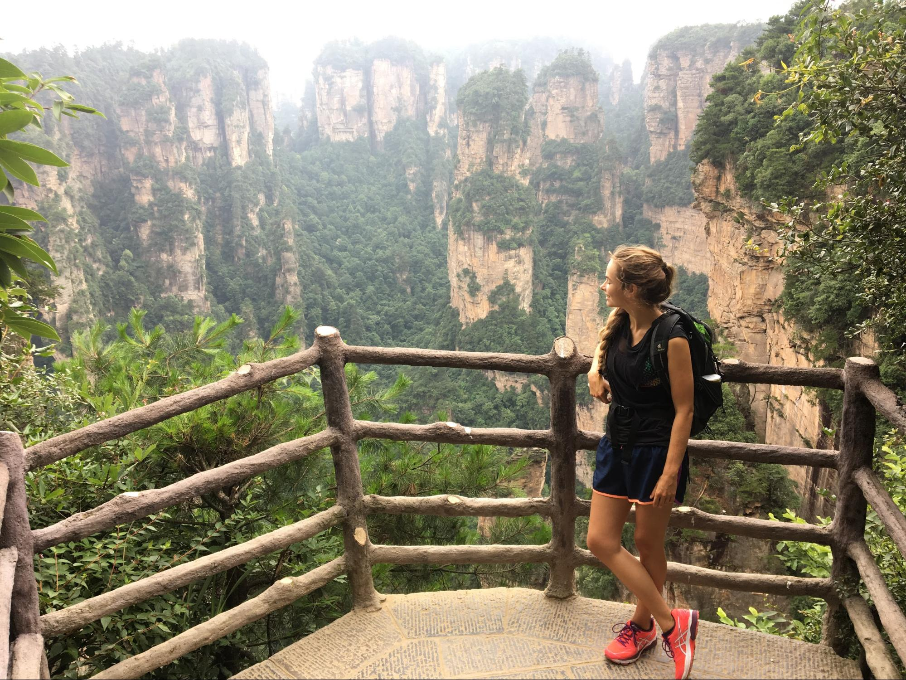

I am a second-year graduate student at the Georgia Institute of
Technology in Computational Science and Engineering, which is simply the
best part of Computer Science. I was born in Germany and completed an
undergraduate program in Aerospace Engineering and obtained my Master’s
in Mechanical Engineering at the Technical University in Munich. So,
if I want to brag, I can tell people that I am an aerospace engineer,
a mechanical engineer, and a computer scientist. If I am being honest
though, I am a computer scientist through and through, because
computer science and especially Machine Learning is.

Sports: I love sports: my favorite sport is running,
but I also like surfing, scuba diving. I enjoy every sport connected to
mountains: hiking, skiing, bouldering - you name it.
Passions: The greatest love of my life are desserts,
and in particular pastries. I love baking cakes, cupcakes, cookies,
brownies, anything that is sweet and buttery and preferably has
chocolate in it.
Dislikes: I am okay with spiders, but there is nothing
that freaks me out like roaches and yes, that can lead to problems when
living in Atlanta. I also hate scorpions, but at least I don’t
encounter them as much here.
Fun Fact: So far, I've been to 4 different continents
and 53 countries! I can't wait to see the others.
Favorite Websites
New York Times: I like to stay up to date, and to do the crosswords!
Instagram: I follow a bunch of cooking and baking blogs and I am addicted to seeing good looking food
Recent Projects
Safety in Atlanta
Last semester I built a data science tool that helps to identify
locations in Atlanta that are most likely to be a crimes scene in the
next future. This tool uses data about population about the location,
business, close by as well as data about past crimes in Atlanta and
their locations and on recent crimes in Atlanta to determine which areas
need the most police presence to prevent crimes and which areas should
be avoided by pedestrians.